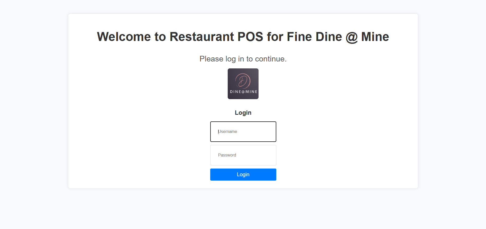
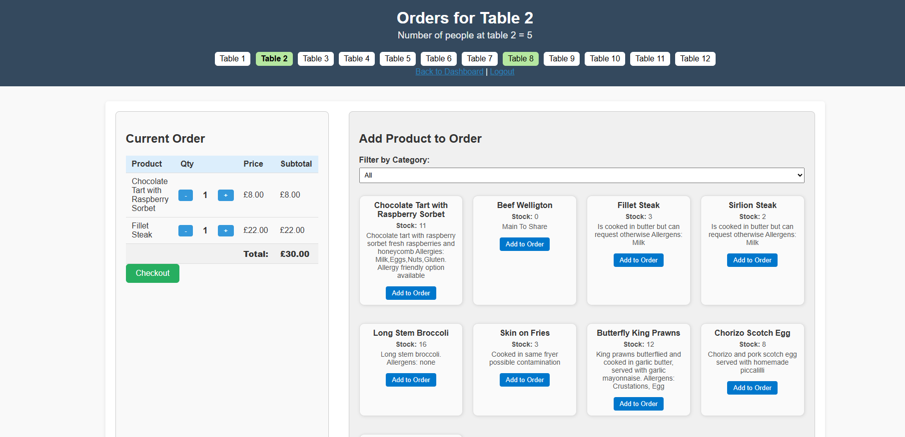
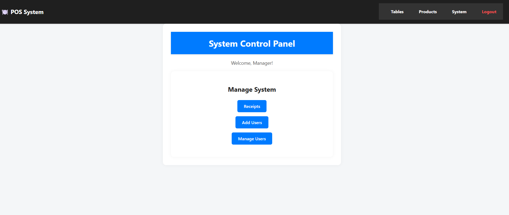
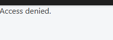

This full-stack Restaurant Point of Sale (POS) system was created for my Computing coursework. It helps staff manage tables, take orders, and check out customers. It uses PHP and MySQL for dynamic backend functionality.
Tech Stack
- Frontend: HTML, CSS
- Backend: PHP
- Database: MySQL
- Environment: XAMPP (Apache + MySQL)
Project Functionality
Login Page
Staff must log in before accessing the POS system.
Table Overview
After login, the staff selects the table and number of guests. Once the table is active it turns green and shows the number of people at the table as the number of poeple that were entered
Order Page
Each table has its own order view to manage products and quantities. As you add items to the basket the stock changes appropriately. This is all stored in the database
Product Management
Everyone can add and edit menu items from the product management page. It also shows the list of products and here you can update or delete the products

Checkout
Once the order is complete, staff can review and clear the table after payment. There is a cash or card option and there is option to spilt the bill too.
System Control
There is a System Control page that includes links to view receipts and access the User Management section. From there, admins can manage user accounts, including adding, editing, or removing users. If a staff member (non-admin) tries to access the user management features, they will see an "Access Denied" message.
 User Management
Admins, such as the manager, can add or edit user accounts and update passwords. All user information is stored securely in a database, with passwords hashed for protection


Receipt Management
All staff members have access to view receipts. Once viewed, they also have the option to delete receipts or download them as PDF files for record-keeping.
Key Code Snippets
Below are a few core code snippets that highlight the functionality and logic behind the restaurant POS system.
🔐 Hashed Password Storage
To protect user security, passwords are hashed before being stored in the database:
$hashedPassword = password_hash($new_password, PASSWORD_DEFAULT);
$stmt = $pdo->prepare("UPDATE users SET password = ? WHERE id = ?");
$stmt->execute([$hashedPassword, $userId]);
🚫 Access Control for Staff
This logic ensures that only users with the admin role can access restricted pages like user management:
if ($_SESSION['role'] !== 'admin') {
echo "Access Denied";
exit;
}
🧾 Generate PDF Receipt
Staff members can view receipts and generate a downloadable PDF version for printing or saving:
require('fpdf/fpdf.php');
$pdf = new FPDF();
$pdf->AddPage();
$pdf->SetFont('Arial', 'B', 16);
$pdf->Cell(40, 10, 'Receipt Details');
// Add dynamic receipt data here
$pdf->Output();